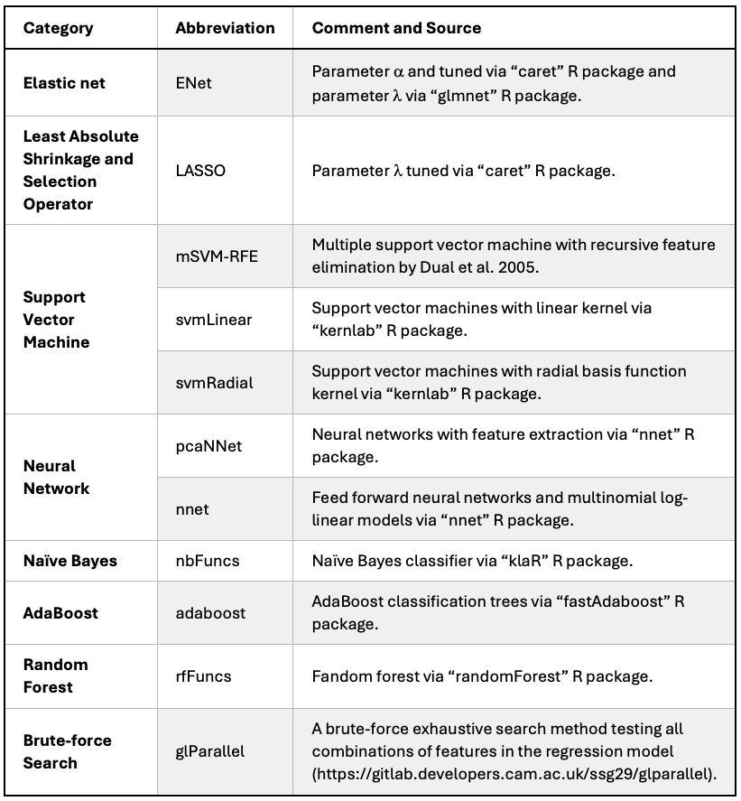

3 Cross Validation
3.1 Data preparation
3.1.1 Internal validation cohort
Internal validation dataset was from the Validation dataset shown in Figure 8.1 C.
Now we set up the Salmon quant files of the validation (i.e. term) dataset. NB, dt.colllDataAll (shown from the code below) was set up from Listing 2.4.
Code to set the
We are ready to read the Salmon quant files via tximeta R package. NB, the code below is equivalent to Listing 2.5 and Listing 2.6 from the discovery cohort (see Section 2.2.1).
Code to read the Salmon quant files of the term dataset and make dds object.
my.dds.RData<-paste0("RData/dds.term.",my.salmon.index,".RData")
if(file.exists(my.dds.RData)){
load(my.dds.RData)
message("loading dds...")
}else{
gse.term<-tximeta::tximeta(dt.colDataTerm,skipMeta=T,tx2gene=dt.tx2gene[,.(transcript_id,gene_id)],txOut=F)
# set up `dds` at gene-level
my.design <- formula(~ Batch + GA + Sex + Condition) # isa 'formula'
dds.term <- DESeqDataSet(se=gse.term, design=my.design)
dds.term$Group<-factor(paste0(dds.term$GA,dds.term$Condition)) # add 'Group'
design(dds.term) <- formula(~ Batch + Sex + Group) # isa 'formula'
#
dds.term<- DESeq(dds.term, parallel=TRUE) # isa 'DESeqDataSet'
save(dds.term,file=my.dds.RData)
}
# use 15150 genes considered in this study
dds.f2.term<-DESeq(dds.term[rownames(dds.f2)], parallel=T)
my.dl.resLFC.RData<-paste0("RData/dl.resLFC.term.",my.salmon.index,".RData")
if(file.exists(my.dl.resLFC.RData)){
load(my.dl.resLFC.RData)
}else{
# apply shink
li.resLFC.term<-lapply(names(li.GA.term),function(my.GA){
my.res<-results(dds.f2.term,
#alpha=.05, # by default independant filtering at FDR (alpha) 0.1 (10%)
independentFiltering=FALSE,
lfcThreshold=log2(minFC),
contrast=c("Group",paste0(my.GA,c("Case","Control"))),
parallel=TRUE)
lfcShrink(dds.f2.term,
#contrast=c("Group",paste0(my.GA,c("Case","Control"))), # not necessary for 'ashr'
res=my.res, #li.res[[my.GA]],
lfcThreshold=log2(minFC), # not applicable for 'asher'
type="ashr",
parallel=TRUE)
})
names(li.resLFC.term)<-names(li.GA.term)
dl.resLFC.term<-lapply(li.resLFC.term, function(i)
data.table(`gene_id`=rownames(i), as.data.frame(i))[order(pvalue)][,`:=`("BH"=p.adjust(pvalue,"BH"),"BY"=p.adjust(pvalue,"BY"),"bf"=p.adjust(pvalue,"bonferroni"))]
)
save(dl.resLFC.term, file=my.dl.resLFC.RData)
#fwrite(dl.resLFC[["28wk"]], file=paste0("data/DEG.DSeq2.28wk.",my.type,".",my.salmon.index,".csv"))
}Now we use edgeR. NB, this is equivalent to Listing 2.8 shown in Section 2.2.2.
Code to find DEGs by edgeR from the term dataset
gse2 <-gse.term[rownames(dds.f2.term),]
d2<-tximeta::makeDGEList(gse2)
d2$samples<-cbind(d2$samples,colData(gse2))
d2$samples$group<-factor(paste0(d2$samples$GA,d2$samples$Condition)) # add 'group'
d2$samples$GA<-droplevels(d2$samples$GA) # 36wk removed - really? 2023-03-21
d2$samples$Batch<-droplevels(d2$samples$Batch) # some batches removed
# TMM normalisation (default). It adds `norm.factors` d2$samples
# NB, we have `offsets`, which take precedence over lib.size and norm.factors
d2<-calcNormFactors(d2,method="TMM")
# design
# my.design <- model.matrix(~ Batch + Sex + group, data=d2$samples) # isa 'matrix'
#my.design <- model.matrix(~ 0 + group, data=d2$samples) # isa 'matrix'
my.design <- model.matrix(~ 0 + group + Sex + Batch , data=d2$samples) # isa 'matrix'
(my.contrasts <- makeContrasts(`12wk`=group12wkCase-group12wkControl,
`20wk`=group20wkCase-group20wkControl,
`28wk`=group28wkCase-group28wkControl,
levels=my.design)
)
# dispersion
#dp2 = estimateDisp(d2, design=my.design, verbose=T)
dp2 = estimateGLMCommonDisp(d2, design=my.design, verbose=T)
dp2 = estimateGLMTrendedDisp(dp2, design=my.design, verbose=T)
dp2 = estimateGLMTagwiseDisp(dp2, design=my.design)
#f = glmFit(dp2, design=my.design) #
f = glmQLFit(dp2, design=my.design) # QL(Quasi-like) pipeline
colnames(f)
f$coefficients %>% head
# get the edgeR results
li.res.edgeR.term<-lapply(names(li.GA.term), function(i){
te <- glmTreat(f, contrast=my.contrasts[,i], lfc=log2(minFC))
topTags(te, n=nrow(te)) # default sort by pvalue
})
names(li.res.edgeR.term) <-names(li.GA.term)
dl.res.edgeR.term<-lapply(li.res.edgeR.term, function(i)
data.table(`gene_id`=rownames(i),i$table)[order(PValue)][,`:=`("BH"=p.adjust(PValue,"BH"),"BY"=p.adjust(PValue,"BY"),"bf"=p.adjust(PValue,"bonferroni"))]
)
my.dl.res.edgeR.RData<-paste0("RData/dl.res.edgeR.term.",my.salmon.index,".RData")
save(dl.res.edgeR.term, file=my.dl.res.edgeR.RData)
#fwrite(dl.res.edgeR[["28wk"]], file=paste0("data/DEG.edgeR.28wk.",my.type,".",my.salmon.index,".csv"))The gene-level count matrix was converted as the unit of CPM (Count Per Million), in log2-scale, via the “cpm” function of edgeR and it was further transformed into a matrix of the z-score using the mean and standard deviation of logCPM from the control samples of each corresponding gestational age group. NB, this is equivalent to Listing 2.9 shown in Section 2.2.3.
Code to make the count matrix from the validation dataset
# based on genes from dds.f2.term
# CPM based on edgeR TMM (NB, d isa "DGEList")
my.cnt.RData<-paste0("RData/dt.count2.term.",my.salmon.index,".RData")
if(file.exists(my.cnt.RData)){
load(my.cnt.RData)
}else{
dt.count<-merge(
data.table(`geneName`=rownames(dds.f2.term),counts(dds.f2.term,normalized=T)) %>%
melt.data.table(id.vars=c("geneName"),variable.name="SampleID",value.name="Count"),
dt.samples[Type=="term",.(SampleID,GA,Condition,Group=paste(GA,Condition,sep="-"))]
)
# CPM based on DESeq2 `fpm`
dt.cpm<-merge(
data.table(`geneName`=rownames(dds.f2.term),fpm(dds.f2.term)) %>%
melt.data.table(id.vars=c("geneName"),variable.name="SampleID",value.name="CPM"),
dt.samples[Type=="term",.(SampleID,GA,Condition,Group=paste(GA,Condition,sep="-"))]
)
dt.tpm<-merge(
data.table(`geneName`=rownames(dds.f2.term), assays(dds.f2.term)[["abundance"]]) %>%
melt.data.table(id.vars=c("geneName"),variable.name="SampleID",value.name="TPM"),
dt.samples[Type=="term",.(SampleID,GA,Condition,Group=paste(GA,Condition,sep="-"))]
)
# CPM based on edgeR TMM (NB, d isa "DGEList")
dt.cpm2<-merge(
data.table(`geneName`=rownames(d2),cpm(d2)) %>%
melt.data.table(id.vars=c("geneName"),variable.name="SampleID",value.name="CPM"),
dt.samples[Type=="term",.(SampleID,GA,Condition,Group=paste(GA,Condition,sep="-"))]
)
dt.logcpm2<-merge(
data.table(`geneName`=rownames(d2),cpm(d2,log=T)) %>%
melt.data.table(id.vars=c("geneName"),variable.name="SampleID",value.name="logCPM"),
dt.samples[Type=="term",.(SampleID,GA,Condition,Group=paste(GA,Condition,sep="-"))]
)
save(dt.count, dt.cpm, dt.tpm, dt.cpm2, dt.logcpm2, file=my.cnt.RData)
}Code to make the z-score matrix from the validation dataset
my.cpmZ.RData<-paste0("RData/dt.cpmZ.term.",my.salmon.index,".RData")
if(file.exists(my.cpmZ.RData)){
load(my.cpmZ.RData)
}else{
dt.cpmZ.term=merge(dt.logcpm2,
dt.logcpm2[Condition=="Control",.(Mean=mean(logCPM),SD=sd(logCPM)),.(GA,geneName)]
,by=c("GA","geneName")
)[,.(Group,GA,Condition,SampleID,geneName,logCPM,logCPMZ=(logCPM-Mean)/SD)]
save(dt.cpmZ.term,file=my.cpmZ.RData)
}3.1.2 External validation dataset
For an external validation, we downloaded the raw sequencing counts file (Data File S2: Raw whole-transcriptome sequencing counts for iPEC cohort; n=113) from Munchel et al.. The Data File (in the excel file format) was read and parsed by using readxl (v1.3.1) and data.table (v1.13.6) R packages, respectively.
For downstream processing, we only considered those genes in the final set of 15,150 genes that were used in the differentially expressed gene analysis of the discovery and the validation cohort (see Section 2.2.1).
Code to import Munchel dataset and make dds object by DESeq2
my.dds.RData<-paste0("RData/dds.munchel.RData")
if(file.exists(my.dds.RData)){
load(my.dds.RData)
message("loading dds...")
}else{
# import
dt.foo<-readxl::read_excel("~/data/Munchel/SciTrMed.2020/aaz0131_data_file_s2.xlsx",skip=3) %>% as.data.table
dt.foo[,-c("Chr","Start","End","Strand")][1:5,1:5]
# sample info with GA of sample collection
dt.munchel.meta<-data.table(
names=dt.foo[is.na(Geneid),-c("Geneid","Chr","Start","End","Strand","Length")] %>%
colnames %>%
stringr::str_replace("\\.\\.\\.",""),
GA=dt.foo[is.na(Geneid),-c("Geneid","Chr","Start","End","Strand","Length")] %>% unlist
)
dt.munchel.meta[,Condition:=ifelse(grepl("PE",names),"Case","Control")]
dt.munchel.meta$GA %>% summary
dt.munchel.meta[,.N,Condition]
dt.munchel.meta[Condition=="Control"]$GA %>% summary
dt.munchel.meta[Condition=="Case"]$GA %>% summary
df.munchel.meta<-data.frame(dt.munchel.meta, row.names=dt.munchel.meta$names)
# cnt
dt.munchel.cnt<-dt.foo[!is.na(Geneid),-c("Chr","Start","End","Strand","Length")]
dt.munchel.cnt %>% dim # 26708 genes x 114 samples
dt.munchel.cnt[1:5,1:5]
colnames(dt.munchel.cnt)<-c("gene_name",dt.munchel.meta$names) # update the sample names
dt.munchel.cnt[1:5,1:5]
dt.munchel.cnt[,.N,gene_name][N>1][order(-N)] # 0 duplicated gene names
dt.munchel.cnt[grepl("_dup",gene_name)][,.N,gene_name] # 1355 such gene names
dt.munchel.cnt[grepl("_dup",gene_name)][1:5,1:5]
dt.munchel.cnt[,gene_name:=tstrsplit(gene_name,"_dup",fixed=T,keep=1L)]
dt.munchel.cnt[grepl("_dup",gene_name)]
dt.munchel.cnt[,.N,gene_name][N>1][order(-N)] # 491 duplicated gene names
dt.munchel.cnt[gene_name=="REXO1L2P",1:5]
dt.munchel.cnt[,.N,gene_name %in% rownames(dds.f2)] # genes only in the dds.f2 (15150 genes)
# TRUE 13555; FALSE 13153
rownames(dds.f2) %in% dt.munchel.cnt$gene_name %>% table # from 15150 genesin dds.f2, 13469 genes in Munchel; 1681 genes not in Munchel
dds.f2[!rownames(dds.f2) %in% dt.munchel.cnt$gene_name] %>% names
dt.munchel.cnt2<- (dt.munchel.cnt[gene_name %in% rownames(dds.f2)] %>%
melt.data.table(id.vars=c("gene_name"), variable.name="SampleID",value.name="Cnt"))[,.(Cnt=sum(Cnt)),.(SampleID,gene_name)] %>%
dcast.data.table(gene_name ~ SampleID, value.var="Cnt")
dim(dt.munchel.cnt2) # 13469 genes x 114 samples
dt.munchel.cnt2[,.N,gene_name][N>1][order(-N)] # no duplicated genes
all.equal(colnames(dt.munchel.cnt),colnames(dt.munchel.cnt2))
mat.munchel.cnt2<-dt.munchel.cnt2 %>% as.matrix(rownames="gene_name")
dim(mat.munchel.cnt2) # 13469 x 113
mat.munchel.cnt2[1:5,1:5]
all.equal(colnames(mat.munchel.cnt2), rownames(df.munchel.meta))
dds.munchel<-DESeqDataSetFromMatrix(mat.munchel.cnt2, df.munchel.meta, design=formula(~Condition) )
dds.munchel<- DESeq(dds.munchel, parallel=TRUE) # isa 'DESeqDataSet'
save(dt.munchel.meta,dds.munchel,file=my.dds.RData)
}Using the filtered gene-level raw count matrix, we ran edgeR and constructed a matrix of CPM, in log2-scale, via the “cpm” function of edgeR. The matrix was further transformed into a matrix of the z-score using the mean and standard deviation of logCPM from the 73 control samples.
Code to make the z-score matrix from the Munchel dataset
my.cpmZ.RData<-paste0("RData/dt.cpmZ.munchel.RData")
if(file.exists(my.cpmZ.RData)){
load(my.cpmZ.RData)
}else{
load("RData/dds.munchel.RData")
dds.munchel # samples from Discovery & Validation1
d.munchel = DEFormats::as.DGEList(dds.munchel)
d.munchel<-calcNormFactors(d.munchel,method="TMM")
dt.logcpm2<-merge(
data.table(`geneName`=rownames(d.munchel),cpm(d.munchel,log=T)) %>%
melt.data.table(id.vars=c("geneName"),variable.name="SampleID",value.name="logCPM"),
df.munchel.meta,by.x="SampleID",by.y="names"
)
dt.cpmZ.munchel=merge(dt.logcpm2,
dt.logcpm2[Condition=="Control",.(Mean=mean(logCPM),SD=sd(logCPM)),.(geneName)]
,by=c("geneName")
)[,.(Condition,SampleID,geneName,logCPM,logCPMZ=(logCPM-Mean)/SD)]
save(dt.cpmZ.munchel,file=my.cpmZ.RData)
}Now, it is ready to set up discovery, validation and the external validation dataset:
Code
load("RData/dt.cpmZ.preterm.POPS-2022.GRCh38.88.RData") # dt.cpmZ (preterm)
load("RData/dt.cpmZ.term.POPS-2022.GRCh38.88.RData") # dt.cpmZ.term (term)
load("RData/dt.cpmZ.munchel.RData") # dt.cpmZ.munchel (Munchel)
li.mat<-list()
# set the train dataset, i.e. preterm-28wk
li.mat[["train"]]<-lapply(list(`12wk`="12wk",`20wk`="20wk",`28wk`="28wk"), function(my.GA) {
dt.cpmZ[GA==my.GA & geneName %in% core17,.(SampleID,geneName,logCPMZ,y=ifelse(Condition=="Case",1,0))] %>% dcast.data.table(SampleID+y~geneName,value.var="logCPMZ") %>% as.matrix(rownames="SampleID") # isa 'list'
})
# set the test dataset, i.e. term
li.mat[["test"]]<-lapply(list(`12wk`="12wk",`20wk`="20wk",`28wk`="28wk",`36wk`="36wk"), function(my.GA) {
dt.cpmZ.term[GA==my.GA & geneName %in% core17,.(SampleID,geneName,logCPMZ,y=ifelse(Condition=="Case",1,0))] %>% dcast.data.table(SampleID+y~geneName,value.var="logCPMZ") %>% as.matrix(rownames="SampleID") # isa 'list'
})
li.mat[["munchel"]]<-dt.cpmZ.munchel[geneName %in% core17,.(SampleID,geneName,logCPMZ,y=ifelse(Condition=="Case",1,0))] %>% dcast.data.table(SampleID+y~geneName,value.var="logCPMZ") %>% as.matrix(rownames="SampleID") # isa 'matrix'3.2 Data split for 5-fold CV
We randomly split the samples into 5 strata by distributing the number of case and control outcomes as even as possible across the 5 folds. This stratified 5-fold splitting was repeated 5 times by changing a seed number in each repetition, and the 11 ML models (see below Section 3.3) were trained to choose a desired number of predictors from 2 to 6.
Code to split 5-fold with 5 repetitions
##############################################
# Set the 5-fold with 5 rep for 28wk preterm #
##############################################
# set stratified folds
# such that the numbers of cases and controls in each fold are the same for each fold (or, at least, as close to this as possible)
nFold<-5; nRep<-5; li.fold<-list() # index of training in
for(iRep in 1:nRep){
caseInds <- which(li.mat[["train"]][["28wk"]][,"y"]==1)
ctrlInds <- which(li.mat[["train"]][["28wk"]][,"y"]==0)
#Randomise for good measure:
set.seed(123+iRep)
caseInds <- caseInds[sample(1:length(caseInds))]
ctrlInds <- ctrlInds[sample(1:length(ctrlInds))]
approximatelyEqualParts_Cases <- ggplot2::cut_interval(1:length(caseInds), nFold)
approximatelyEqualParts_Ctrls <- ggplot2::cut_interval(1:length(ctrlInds), nFold)
quintiles_Cases <- vector(mode = "integer", length = length(caseInds))
quintiles_Ctrls <- vector(mode = "integer", length = length(ctrlInds))
for(i in 1:length(levels(approximatelyEqualParts_Cases))){
currentLevel <- levels(approximatelyEqualParts_Cases)[i]
quintiles_Cases[approximatelyEqualParts_Cases == currentLevel] <- i
}
for(i in 1:length(levels(approximatelyEqualParts_Ctrls))){
currentLevel <- levels(approximatelyEqualParts_Ctrls)[i]
quintiles_Ctrls[approximatelyEqualParts_Ctrls == currentLevel] <- i
}
quintiles <- vector(mode = "integer", length = nrow(li.mat[["train"]][["28wk"]]))
for(i in 1:nFold){
quintiles[c(caseInds[quintiles_Cases == i], ctrlInds[quintiles_Ctrls == i])] <- i
}
# Split the data into training and testing sets for this fold
for(iFold in 1:nFold){
li.fold[[paste0("Fold",iFold,".Rep",iRep)]]<-which(quintiles != iFold)
}
} # end of iRep
########################################
# Set the final 5-fold to use all_28wk #
########################################
nFold<-5; nRep<-1; li.fold.final<-list() # index of training in
for(iRep in 1:nRep){
caseInds <- which(li.mat[["train"]][["28wk"]][,"y"]==1)
ctrlInds <- which(li.mat[["train"]][["28wk"]][,"y"]==0)
#Randomise for good measure:
set.seed(333)
caseInds <- caseInds[sample(1:length(caseInds))]
ctrlInds <- ctrlInds[sample(1:length(ctrlInds))]
approximatelyEqualParts_Cases <- ggplot2::cut_interval(1:length(caseInds), nFold)
approximatelyEqualParts_Ctrls <- ggplot2::cut_interval(1:length(ctrlInds), nFold)
quintiles_Cases <- vector(mode = "integer", length = length(caseInds))
quintiles_Ctrls <- vector(mode = "integer", length = length(ctrlInds))
for(i in 1:length(levels(approximatelyEqualParts_Cases))){
currentLevel <- levels(approximatelyEqualParts_Cases)[i]
quintiles_Cases[approximatelyEqualParts_Cases == currentLevel] <- i
}
for(i in 1:length(levels(approximatelyEqualParts_Ctrls))){
currentLevel <- levels(approximatelyEqualParts_Ctrls)[i]
quintiles_Ctrls[approximatelyEqualParts_Ctrls == currentLevel] <- i
}
quintiles <- vector(mode = "integer", length = nrow(li.mat[["train"]][["28wk"]]))
for(i in 1:nFold){
quintiles[c(caseInds[quintiles_Cases == i], ctrlInds[quintiles_Ctrls == i])] <- i
}
# Split the data into training and testing sets for this fold
for(iFold in 1:nFold){
li.fold.final[[paste0("Fold",iFold,".Rep",iRep)]]<-which(quintiles != iFold)
}
} # end of iRep3.3 11 machine learning methods
We considered a total of 11 ML methods to select the best performing method based on the 5-fold cross-validation (CV) with 5 repetitions.

For the three penalised regression methods (ENet1, ENet2 and LASSO), they were firstly fitted by using the train function for the two Elastic net methods (ENet1 and ENet2) and the cv.glmnet function for LASSO, from the caret (v6.0.94) and the glmnet (v.4.1.2) R package, respectively. For ENet1, both the parameter \(\alpha\) and \(\lambda\) were tuned by the caret::train, whereas the parameter \(\lambda\) was further tuned by the glmnet::cv.glmnet for ENet2.
Next, based on the best fitted penalised regression models, a matrix of the \(\beta\) coefficient was examined to find the first set of predictors with non-zero \(\beta\) coefficients that satisfied a desired number of predictors. If the number of predictors with non-zero coefficients exceeded the desired number, the absolute values of coefficients were sorted in their decreasing order and only the desired number of predictors were selected with their highest absolute scores.
For the remaining methods, except mSVM-RFE (see also Section 3.3.2) which embedded a Recursive Feature Elimination (RFE) algorithm internally, we used the caret::rfe function by controlling the “sizes” parameter to have the corresponding models with the desired number of predictors.
3.3.1 glParallel
In glParallel, a brute-force exhaustive search method, for a given number of predictors, it searched all possible combinations of predictors in multivariate regression models and picked the best model based on the highest predictive performance.
For example, glParallel trained a total of 2,380 models, which is the possible number of combinations having 4 predictors out of 17, and chose the best model based on the highest Leave Pair Out Cross Validated (LPOCV) Area Under the ROC Curve (AUC), a version of optimism-corrected AUC.
Install
glParallel
Then, prepare dataset to run glParallel.
Code to prepare dataset for glParallel
#####################################################
# make training dataset files for the CV glParallel #
#####################################################
lapply(names(li.fold), function(i){
message("fold=",i)
# training set
my.index=li.fold[[i]]
my.file.name=file.path("glParallel/data",paste("core17",i,"csv",sep="."))
fwrite(li.mat[["train"]][["28wk"]][my.index,], file=my.file.name)
})
# then run glParallel (see glParallel/RUN)
####################################################
# make training dataset files for final glParallel #
####################################################
fwrite(li.mat[["train"]][["28wk"]], file="glParallel/data/core17.final.csv")
LPOCV-AUC
In LPOCV-AUC, a model was fitted based on a given set of training samples except one pair of case-and-control, then the model was used to predict the outcome of the remaining pair. The LPOCV-AUC was calculated as the proportion of all pairwise combinations in which the predicted probability was greater for the case than for the control. There is a helper function to calculate the LPOCV-AUC in glParallel
3.3.2 mSVM-RFE
This method is from the (multiple) Support Vector Machine Recursive Feature Elimination (mSVM-RFE).
3.4 5-Fold cross validation
We defined a series of helper functions to facilitate the whole process of CV more efficient.
R function get_lasso_coef
This helper function runs LASSO and ranks features by their importance.
Code to run Lasso and get non-zero coefficient
# returns: data.table(`method`,`fold`,`feature`,`score`,`rank`)
get_lasso_coef<-function(x,my.fold,my.num=4){
#x isa `matrix` and should contain 'y' column
all.features<-colnames(x)[colnames(x)!="y"]
#############
# run Lasso #
#############
set.seed(333) # set a random seed for a reproducibility
system.time(
cv.fit<-cv.glmnet(
x= x[,all.features],
y= x[,'y'],
family="binomial",
alpha=1, # default (i.e. lasso)
keep=T, # FALSE by default
type.measure = "auc" #type.measure="class" # default for 'binomial'
)
)
############################################
# 1. select by lambda.min & 2. lambda.1se #
############################################
dt.foo<-lapply(c("lambda.min","lambda.1se"), function(my.lambda){
coeff1<-coef(cv.fit, s = my.lambda) %>% as.matrix #Extract coefficients from this glmnet object
nZero1<-coeff1[coeff1[,"s1"]!=0,,drop=F][-1,,drop=F] %>% nrow # the number of non-zero coeff
if(nZero1==0){
dt.foo<-data.table(
method=my.lambda,
fold=my.fold,
`feature`=NA,
score=NA)
}else{
coeff1[coeff1[,"s1"]!=0,,drop=F][-1,,drop=F]
coeff1[coeff1[,"s1"]!=0,,drop=F][-1,,drop=F] %>% as.data.table(keep.rownames=T) # return DT(rn,s1)
dt.foo<-data.table(
method=my.lambda,
fold=my.fold,
coeff1[coeff1[,"s1"]!=0,,drop=F][-1,,drop=F] %>% as.data.table(keep.rownames=T))
}
setnames(dt.foo,c("method","fold","feature","score"))
dt.foo
}) %>% rbindlist
####################
# 3. Lasso-pathway #
####################
mat.beta <- cv.fit$glmnet.fit$beta %>% as.matrix
apply(mat.beta, 2, function(i){table(i!=0)["TRUE"]})
my.lambdas<-apply(mat.beta, 2, function(i){table(i!=0)["TRUE"]})>=my.num
this.index<-my.lambdas[my.lambdas & !is.na(my.lambdas)][1] %>% names # the first index >=my.num
if(is.na(this.index)){
NULL
}else{
this.index.num <- (strsplit(this.index,"s")[[1]][2] %>% as.integer) +1
nZero<-sum(mat.beta[,this.index]!=0, na.rm=T) # number of non-zero coefficient
#mat.beta[mat.beta[,this.index]!=0,this.index,drop=F]
dt.bar<-data.table(
method="LASSO",
fold=my.fold,
mat.beta[mat.beta[,this.index.num]!=0,this.index.num,drop=F] %>% as.data.table(keep.rownames=T)
) # save as the above
setnames(dt.bar,c("method","fold","feature","score"))
if(nrow(dt.bar)>my.num){
dt.bar<-dt.bar[order(method,fold,-abs(score))][1:my.num]
}
dt.baz<-rbind(dt.foo, dt.bar)
dt.baz<-dt.baz[order(method,fold,-abs(score))][,rank:=1:.N,.(method,fold)]
return(dt.baz)
}
} # end of get_lasso_coefR function get_enet_coef
This helper function runs Elastic net and rank features by their importance.
Code to run ENet1 and ENet2 and get non-zero coefficients
# returns: data.table(`method`,`fold`,`feature`,`score`,`rank`)
get_enet_coef<-function(x,my.fold,my.num=4){
#x isa `matrix` and should contain 'y' column
all.features<-colnames(x)[colnames(x)!="y"]
cv.fit<-list()
##########
# E: EN1 #
##########
cl <- makePSOCKcluster(8) # No. of cores to use
registerDoParallel(cl)
set.seed(333) # set a random seed for a reproducibility
system.time(
cv.fit[["E"]]<-caret::train(
x= x[,all.features],
y=factor(ifelse(x[,"y"]==1,'case','non_case'),levels=c("non_case","case")),
method="glmnet",
family="binomial",
trControl = trainControl(method = "cv",
summaryFunction = twoClassSummary,
classProbs = TRUE,
savePredictions = T,
verboseIter = T,
), # number =10 by default for "cv"
tuneLength=10, # grid size: 10(alpha) * 10(lambda)
)
)
stopCluster(cl)
if(F){
varImp(cv.fit[["E"]], useModel=T)
varImp(cv.fit[["E"]], useModel=F, nonpara=F, scale=T)
predictors(cv.fit$E) # features used in the model
}
mat.beta<- cv.fit$E$finalModel$beta %>% as.matrix
my.lambdas<-apply(mat.beta, 2, function(i){table(i!=0)["TRUE"]})>=my.num
this.index<-my.lambdas[my.lambdas & !is.na(my.lambdas)][1] %>% names
if(is.na(this.index)){
dt.foo<-NULL
}else{
this.index.num <- (strsplit(this.index,"s")[[1]][2] %>% as.integer) +1
#mat.beta[mat.beta[,this.index.num]!=0,this.index.num,drop=F] %>% as.data.table(keep.rownames=T)
dt.foo<-data.table(method="ENet1",
fold=my.fold,
mat.beta[mat.beta[,this.index.num]!=0,this.index.num,drop=F] %>% as.data.table(keep.rownames=T)) # save as the above
setnames(dt.foo,c("method","fold","feature","score"))
if(nrow(dt.foo)>my.num){
dt.foo<-dt.foo[order(method,fold,-abs(score))][1:my.num]
}
}
##########
# F: EN2 #
##########
set.seed(333)
system.time(
cv.fit[["F"]]<-cv.glmnet(
x= x[,all.features],
y= x[,"y"], # will be coerced to a factor if not (for binomial)
family="binomial",
alpha=cv.fit$E$bestTune$alpha,
keep=T, # FALSE by default
type.measure = "auc" #type.measure="class" # default for 'binomial'
)
)
#cv.fit$F$nzero
mat.beta2 <- cv.fit$F$glmnet.fit$beta %>% as.matrix
my.lambdas<-apply(mat.beta2, 2, function(i){table(i!=0)["TRUE"]})>=my.num
this.index<-my.lambdas[my.lambdas & !is.na(my.lambdas)][1] %>% names
if(is.na(this.index)){
dt.bar<-NULL
}else{
this.index.num <- (strsplit(this.index,"s")[[1]][2] %>% as.integer) +1
dt.bar<-data.table(
method="ENet2",
fold=my.fold,
mat.beta2[mat.beta2[,this.index.num]!=0,this.index.num,drop=F] %>% as.data.table(keep.rownames=T)) # save as the above
setnames(dt.bar,c("method","fold","feature","score"))
if(nrow(dt.bar)>my.num){
dt.bar<-dt.bar[order(method,fold,-abs(score))][1:my.num]
}
}
dt.baz<-rbind(dt.foo,dt.bar)
if(!is.null(dt.baz)){
dt.baz<-dt.baz[order(method,fold,-abs(score))][,rank:=1:.N,.(method,fold)]
}
return(dt.baz)
} # end of get_enet_coefR function runRFE2
This helper function select desired number of features by using recursive feature elimination method via caret::rfe()
Code to run recursive feature elimination
# x: data matrix
# my.method:
# my.num: number of desired features
# my.index: a list with elements for each external resampling iteration.
# is.final: the final selected features if set true; oterwise at each fold level
# returns: data.table(`method`,`fold`,`feature`,`score`,`rank`)
runRFE2 <-function(x, my.method="svmRadial", my.num=4, my.index, is.final=F){
#x isa `matrix` and should contain 'y' column
all.features<-colnames(x)[colnames(x)!="y"]
li.methods<-list(
`adaboost`="adaboost",
`svmLinear`="svmLinear",
`svmRadial`="svmRadial",
`nnet`="nnet",
`pcaNNet`="pcaNNet",
`rfFuncs`=rfFuncs,
`nbFuncs`=nbFuncs,
)
my.fun<-li.methods[[my.method]]
if(is.list(my.fun)){
myFuncs<-my.fun
}else{
myFuncs<-caretFuncs
}
myFuncs$summary <- twoClassSummary
rfe.ctrl <- rfeControl(functions=myFuncs,
method = "cv",
#repeats =1, number = 10, # NB, index below
#returnResamp="all", # "final" by default
saveDetails=T,
verbose = TRUE,
index = my.index #a list with elements for each external resampling iteration.
#Each list element is the sample rows used for training at
#that iteration.
)
tr.ctrl <- trainControl(method = "cv",
#repeats =1, number = 10, # NB, index below
summaryFunction = twoClassSummary,
classProbs = TRUE,
savePredictions = T,
verboseIter = T,
index = my.index #a list with elements for each external resampling iteration.
#Each list element is the sample rows used for training at
#that iteration.
)
# run REF via caret::ref #
cl <- makePSOCKcluster(8) # No. of cores to use
registerDoParallel(cl)
set.seed(333) # set a random seed for a reproducibility
cv.rfe<-caret::rfe(
x=as.data.frame(x[,all.features]),
y=factor(ifelse(x[,"y"]==1,'case','non_case'),levels=c("non_case","case")),
sizes = my.num, #2^(2:4), # default
metric="ROC",
rfeControl=rfe.ctrl,
method=my.method, # feed it to 'train'
tuneLength = 5, #ifelse(trControl$method == "none", 1, 3)
trControl=tr.ctrl # feed it to 'train'
)
stopCluster(cl)
dt.foo<-data.table(`method`=my.method,cv.rfe$variables)
if(is.final){
dt.bar<-data.table(`method`=my.method,
`fold`="final",
`feature`=cv.rfe$optVariables[1:my.num],
`score`=NA,
`rank`=1:my.num)
}else{
dt.bar<-dt.foo[Variables==cv.rfe$optsize][order(Resample,-Overall)][,.SD[1:my.num],.(method,Resample)][,rank:=1:.N,.(method,Resample)][,.(method,fold=Resample,feature=var,score=Overall,rank)]
}
return(dt.bar)
}R function get_cv_glm
This helper function extracts the predictive performance of the training model from a given fold tested using held-out samples during kCV.
Code to extract the stat of the training model given the fold ID from the 5-fold CV with 5 repetitions
# x: matrix dataset (train/test at the same time, separated by my.index which is the training)
# my.fold: fold ID
# my.index: the training index of `x` to subset where the model should be built
# my.feature: features of interests
get_cv_glm<-function(x=li.mat[["train"]][["28wk"]],my.fold,my.index,my.feature){
mat.tr<-x[my.index,] # index of the training
df.mat.tr<-mat.tr[,c(my.feature,'y')] %>% as.data.frame # training set
############################################
# fit the model using the training dataset #
############################################
my.model<-glm(y~. , data = df.mat.tr, family = "binomial")
# ROC from the training fold
my.roc <-pROC::roc(response=df.mat.tr$y, predictor=fitted(my.model),quite=T,ci=T)
# LPOCV from the training fold
LPOCV.boot<-boot::boot(data=df.mat.tr, statistic=get_LPOCV_boot,R=100,parallel="multicore",ncpus=10)
LPOCV.ci<-boot::boot.ci(LPOCV.boot,type="perc")
# the whole dataset were training set, i.e. no test
if(length(my.index)==nrow(x)){
cbind(
data.table(
`fold`=my.fold,
`predictor`=paste(my.feature,collapse=",")
),
data.table(
`AIC`=my.model$aic,
`BIC`=BIC(my.model),
`AUC`=my.roc$ci[2]*100,
`AUC_lo`=my.roc$ci[1]*100,
`AUC_hi`=my.roc$ci[3]*100,
`LPOCV`=LPOCV.boot$t0,
`LPOCV_lo`=LPOCV.ci$percent[4],
`LPOCV_hi`=LPOCV.ci$percent[5]
)
)
}else{
#################################################
# now, predict the outcome of the held-out data #
# using the model from the training dataset #
#################################################
mat.test<-x[-my.index,]
df.mat.test<-mat.test[,c(my.feature,'y')] %>% as.data.frame # held-out
my.prob<-predict.glm(my.model, newdata=df.mat.test, type="response")
my.roc.test <- pROC::roc(response=df.mat.test$y, predictor=my.prob,quiet=T,ci=T)
LPOCV.boot.test<-boot::boot(data=df.mat.test, statistic=get_LPOCV_boot,R=100,parallel="multicore",ncpus=20)
# deal with failed boot result
if(is.numeric(LPOCV.boot.test$t)){
LPOCV.ci.test<-boot::boot.ci(LPOCV.boot.test,type="perc")
LPOCV_test_lo=LPOCV.ci.test$percent[4]
LPOCV_test_hi=LPOCV.ci.test$percent[5]
}else{
LPOCV_test_lo=NA
LPOCV_test_hi=NA
}
# return the following table
cbind(
data.table(
`fold`=my.fold,
`predictor`=paste(my.feature,collapse=",")
),
data.table(
`AIC`=my.model$aic,
`BIC`=BIC(my.model),
`AUC`=my.roc$ci[2]*100,
`AUC_lo`=my.roc$ci[1]*100,
`AUC_hi`=my.roc$ci[3]*100,
`LPOCV`=LPOCV.boot$t0,
`LPOCV_lo`=LPOCV.ci$percent[4],
`LPOCV_hi`=LPOCV.ci$percent[5],
`AUC_test`=my.roc.test$ci[2]*100,
`AUC_test_lo`=my.roc.test$ci[1]*100,
`AUC_test_hi`=my.roc.test$ci[3]*100,
`LPOCV_test`=LPOCV.boot.test$t0,
`LPOCV_test_lo`=LPOCV_test_lo,
`LPOCV_test_hi`=LPOCV_test_hi
)
)
}
}R function get_cv_glm2
This helper function extracts the basic statistic (e.g. AIC, BIC, and AUC etc) of the training model for a given fold during kCV.
Code to extract the predictive performance of the training model given the fold ID from the 5-fold CV with 5 repetitions
# x: the dataset where the model should be tested on (i.e. the test set)
# my.model: the model from the training
# my.feature: features of interests
get_cv_glm2<-function(x=li.mat[["test"]][["28wk"]],my.fold, my.model,my.feature){
df.mat.test<-x[,c(my.feature,'y')] %>% as.data.frame # test (validation) dataset
#my.prob<-predict.glm(my.model, newdata=df.mat.test, type="response")
my.prob<-predict(my.model, newdata=df.mat.test, type="response")
my.roc.test <- pROC::roc(response=df.mat.test$y, predictor=my.prob,quiet=T,ci=T)
LPOCV.boot.test<-boot::boot(data=df.mat.test, statistic=get_LPOCV_boot,R=100,parallel="multicore",ncpus=20)
# deal with failed boot result
if(is.numeric(LPOCV.boot.test$t)){
LPOCV.ci.test<-boot::boot.ci(LPOCV.boot.test,type="perc")
LPOCV_test_lo=LPOCV.ci.test$percent[4]
LPOCV_test_hi=LPOCV.ci.test$percent[5]
}else{
LPOCV_test_lo=NA
LPOCV_test_hi=NA
}
# return the following table
cbind(
data.table(
`fold`=my.fold,
`predictor`=paste(my.feature,collapse=",")
),
data.table(
`AUC_test`=my.roc.test$ci[2]*100,
`AUC_test_lo`=my.roc.test$ci[1]*100,
`AUC_test_hi`=my.roc.test$ci[3]*100,
`LPOCV_test`=LPOCV.boot.test$t0,
`LPOCV_test_lo`=LPOCV_test_lo,
`LPOCV_test_hi`=LPOCV_test_hi,
`AIC`=my.model$aic,
`BIC`=BIC(my.model)
)
)
}Having defined those helper functions, we are now ready to proceed 5-fold CV with 5 repetitions.
Code to run 11 ML methods in 5-fold CV with 5-repetitions
##
## Training on based on 5-fold CV
##
my.RData<-file.path("RData/dl.kcv.core17.RData")
if(file.exists(my.RData)){
load(my.RData)
}else{
library(e1071)
source('SVM-RFE/msvmRFE.R')
li.methods<-list(
`adaboost`="adaboost",
`svmLinear`="svmLinear",
`svmRadial`="svmRadial",
`nnet`="nnet",
`pcaNNet`="pcaNNet",
`rfFuncs`=rfFuncs,
`nbFuncs`=nbFuncs
)
#|Num: 6 Method: LASSO
# Fold5.Rep5
#Error in mat.beta[, this.index] : subscript out of bounds
li.num<-list(`F2`=2,`F3`=3,`F4`=4,`F5`=5,`F6`=6)
dl.kcv<-lapply(li.num, function(my.num){
# 1. glParallel
message(paste("Num:",my.num,"Method: glParallel"))
my.pattern=paste0("^core17\\.Fold[[:alnum:]]\\.Rep[[:alnum:]]\\.best",my.num)
dt.input<-data.table(
foo=list.files("glParallel/result",pattern=my.pattern),
files=list.files("glParallel/result",pattern=my.pattern,full.names=T)
)[,c("foo1","bar1"):=tstrsplit(foo,"\\.",keep=c(2,3))][,fold:=paste(foo1,bar1,sep=".")][,c("foo","foo1","bar1"):=NULL]
dt.cv.glp <-apply(dt.input, 1, function(i){
my.fold<-i[["fold"]]
my.feature<-fread(i["files"])[1][["Best proteins"]] %>% strsplit(",") %>% unlist
data.table(method="glParallel",fold=my.fold,feature=my.feature,score=NA,rank=NA)
#cbind(`fold`=i[["fold"]],fread(i["files"])[1])
}) %>% rbindlist
# 2. Lasso
# one multinomial or binomial class has fewer than 8 observations; dangerous ground
dt.cv.lasso<-lapply(names(li.fold), function(my.fold){
message(paste("Num:",my.num,"Method: LASSO, Fold:",my.fold))
my.tr.index<-li.fold[[my.fold]] # index of training
x<-li.mat[["train"]][["28wk"]][my.tr.index,] # the training dataset
get_lasso_coef(x, my.fold, my.num=my.num)
}) %>% rbindlist
# 3. ElasticNet
# warnings(): one multinomial or binomial class has fewer than 8 observations; dangerous ground
dt.cv.enet<-lapply(names(li.fold), function(my.fold){
message(paste("Num:",my.num,"Method: ENET, Fold:",my.fold))
my.tr.index<-li.fold[[my.fold]] # index of training
x<-li.mat[["train"]][["28wk"]][my.tr.index,] # the training dataset
get_enet_coef(x, my.fold, my.num=my.num)
}) %>% rbindlist
# 4. mSVM-RFE
dt.cv.svm<-lapply(names(li.fold), function(my.fold){
message(paste("Num:",my.num,"Method: mSVM-RFE, Fold:",my.fold))
my.tr.index<-li.fold[[my.fold]] # index of training
x<-li.mat[["train"]][["28wk"]][my.tr.index,] # the training dataset
set.seed(333)
ranked.features<-colnames(x)[-1][svmRFE(x, k=5, halve.above=100)][1:my.num] # only top x ranked features
data.table(method="mSVM-RFE",`fold`=my.fold,feature=ranked.features, score=NA,rank=1:length(ranked.features))
}) %>% rbindlist
# 5-10. Other methods via RFE
dt.cv.rfe<-lapply(names(li.methods), function(my.method){
# runRFE2 for each repetition
lapply(paste0("Rep",1:5), function(iRep){
this.fold<-paste(paste0("Fold",1:5),iRep,sep=".") # 5-fold for this repetition
message(paste("Num:",my.num,"Method:",my.method, "Fold:",this.fold))
runRFE2(x=li.mat[["train"]][["28wk"]], my.method=my.method, my.num=my.num, my.index=li.fold[this.fold])
}) %>% rbindlist
}) %>% rbindlist
rbind(dt.cv.glp, dt.cv.lasso[method=="LASSO"], dt.cv.enet, dt.cv.svm, dt.cv.rfe)
}) # end of dl.kcv
save(dl.kcv, file=my.RData)
}
##
##
my.RData<-file.path("RData/dl.kcv.result.core17.RData")
if(file.exists(my.RData)){
load(my.RData)
}else{
# for each number of feature: F2, F3, F4, F5, F6
dl.kcv.result<-parallel::mclapply(dl.kcv, function(dt.kcv){
# features by method and fold
dt.foo<-dt.kcv[order(method,fold,feature)][,.(.N,features=paste(feature,collapse=",")),.(method,fold)]
my.num<-dt.foo[,unique(N)]
# features by method, fold and features
dt.bar<-dt.kcv[order(method,fold,feature)][,.(.N,features=paste(feature,collapse=",")),.(method,fold)][,.(.N,methods=paste(method,collapse=",")),.(fold,features)][order(fold,-N)]
# get the CV-LPOCV (or CV-AUC) across 25 folds (i.e. 5-Fold-CV * 5 Rep)
dl.bar<-split(dt.bar, dt.bar$fold) # by each fold
dt.kcv.result<-parallel::mclapply(dl.bar, function(dt.baz){
my.fold<-dt.baz[,.N,fold]$fold
my.index<-li.fold[[my.fold]] # index of training
# for each list of features in this fold
lapply(dt.baz$features, function(i){
message(paste("Num:",my.num,", Fold:",my.fold, ", Features:",i))
my.feature <- i %>% strsplit(",") %>% unlist
get_cv_glm(x=li.mat[["train"]][["28wk"]],my.fold,my.index,my.feature)
}) %>% rbindlist # merge all features
},mc.cores=1) %>% rbindlist # merge all fold
merge(dt.foo, dt.kcv.result, by.x=c("fold","features"), by.y=c("fold","predictor"))
},mc.cores=1) # parallel by the No. of features
save(dl.kcv.result, file=my.RData)
}Having selected a set of predictors for each of the 11 ML methods, a logistic regression model was fitted on the training fold based on the selected predictors, and its predictive performance, i.e. the AUC, was calculated using the remaining held-out test fold. As the 5-fold CV was repeated 5 times, the 25 cross-validated AUCs were averaged by taking the mean AUC. This procedure was repeated from a selection of 2- to 6-predictor models, i.e. 5 times, so the cross-validated AUCs were again averaged by taking the mean values of AUCs.
Code to extract the final selected features from each ML method and fit a regression model and test its performance.
my.RData<-file.path("RData/dl.final.models.core17.RData")
if(file.exists(my.RData)){
load(my.RData)
}else{
library(e1071)
source('SVM-RFE/msvmRFE.R')
li.methods<-list(
`svmLinear`="svmLinear",
`svmRadial`="svmRadial",
`nnet`="nnet",
`pcaNNet`="pcaNNet",
`rfFuncs`=rfFuncs,
`nbFuncs`=nbFuncs
)
li.num<-list(`F2`=2,`F3`=3,`F4`=4,`F5`=5,`F6`=6)
x<-li.mat[["train"]][["28wk"]]
dl.final.models<-lapply(li.num, function(my.num){
# 1. glParallel
message(paste("Num:",my.num,"Method: glParallel"))
my.pattern=paste0("^core17\\.final\\.best",my.num)
dt.input<-data.table(
foo=list.files("glParallel/result",pattern=my.pattern),
files=list.files("glParallel/result",pattern=my.pattern,full.names=T)
)[,c("foo1","bar1"):=tstrsplit(foo,"\\.",keep=c(2,3))][,fold:=paste(foo1,bar1,sep=".")][,c("foo","foo1","bar1"):=NULL]
dt.glp <-apply(dt.input, 1, function(i){
my.fold<-i[["fold"]]
my.feature<-fread(i["files"])[1][["Best proteins"]] %>% strsplit(",") %>% unlist
data.table(method="glParallel",fold=my.fold,feature=my.feature,score=NA,rank=NA)
#cbind(`fold`=i[["fold"]],fread(i["files"])[1])
}) %>% rbindlist
# 2. Lasso
message(paste("Num:",my.num,"Method: LASSO"))
dt.lasso<-get_lasso_coef(x=x, "final", my.num=my.num)
# 3. ElasticNet
message(paste("Num:",my.num,"Method: ENET"))
dt.enet<-get_enet_coef(x=x, "final", my.num=my.num)
# 4. mSVM-RFE
message(paste("Num:",my.num,"Method: mSVM-RFE"))
set.seed(333)
ranked.features<-colnames(x)[-1][svmRFE(x, k=5, halve.above=100)][1:my.num] # only top 4 ranked features
dt.svm<-data.table(method="mSVM-RFE",`fold`="final",feature=ranked.features, score=NA, rank=1:length(ranked.features))
# 5-10. Other methods via RFE: "svmLinear" "svmRadial" "nnet" "pcaNNet" "rfFuncs" "nbFuncs"
dt.rfe<-lapply(names(li.methods), function(my.method){
message(paste("Num:",my.num,"Method:",my.method))
runRFE2(x=x, my.method=my.method, my.num=my.num, my.index=li.fold.final, is.final=T)
}) %>% rbindlist
# compile all the final models #
rbind(dt.glp, dt.lasso[method=="LASSO"], dt.enet, dt.svm, dt.rfe)[order(method,feature)]
}) # end of dl.final.models
save(dl.final.models, file=my.RData)
} # end of if
my.RData<-file.path("RData/dl.final.result.core17.RData")
if(file.exists(my.RData)){
load(my.RData)
}else{
mat.tr<-li.mat[["train"]][["28wk"]] # training model
dl.final.result<-lapply(dl.final.models, function(dt.model){
dt.final.model<-dt.model[,.(.N,features=paste(feature,collapse=",")),method][order(features)]
dt.final<-dt.final.model[,.(.N,methods=paste(method,collapse=',')),features]
#######################################################################
# get LPOCV/AUC from the preterm dataset (NB, 28wk-preterm: training) #
#######################################################################
dt.final.result<-lapply(dt.final$methods, function(my.methods){
############################################
# fit the model using the training dataset #
############################################
my.feature<-dt.final[methods==my.methods]$features %>% strsplit(",") %>% unlist
df.mat.tr<-mat.tr[,c(my.feature,'y')] %>% as.data.frame # training set
my.model<-glm(y~. , data = df.mat.tr, family = "binomial")
## preterm (NB, 28wk: training dataset where the model was built)
dt.foo1<-lapply(c("12wk","20wk","28wk"), function(my.GA){
message(paste("preterm",my.methods,my.GA,sep=":"))
x<-li.mat[["train"]][[my.GA]]
my.fold<-paste0(my.GA,"(preterm)")
cbind(`methods`=my.methods,
get_cv_glm2(x=x,my.fold=my.fold,my.model=my.model,my.feature=my.feature)
)
}) %>% rbindlist
## term (validation)
dt.foo2<-lapply(c("12wk","20wk","28wk","36wk"), function(my.GA){
message(paste("term",my.methods,my.GA,sep=":"))
x<-li.mat[["test"]][[my.GA]]
my.fold<-paste0(my.GA,"(term)")
cbind(`methods`=my.methods,
get_cv_glm2(x=x,my.fold=my.fold,my.model=my.model,my.feature=my.feature)
)
}) %>% rbindlist
## Munchel
message(paste("Munchel",my.methods,sep=":"))
x<-li.mat[["munchel"]]
my.fold<-"Munchel"
dt.foo3<-cbind(`methods`=my.methods,
get_cv_glm2(x=x,my.fold=my.fold,my.model=my.model,my.feature=my.feature)
)
rbind(dt.foo1,dt.foo2,dt.foo3)
}) %>% rbindlist
dt.final.result<-dt.final.result[order(fold,-AUC_test)]
dt.final.result
})
save(dl.final.result, file=my.RData)
}3.5 Internal and external validation
Having identified the winning method (as shown in Figure 8.7 A), it was applied to choose 2 to 10 predictors using the whole 28wkGA samples of the discovery dataset and the selected predictors were used to fit multivariate logistic regression models using the same training dataset (Figure 8.7 B). Finally, we evaluated the predictive performance of those 2- to 10-predictor logistic regression models using the term validation cohort and the external Munchel dataset (as shown in Figure 8.8).
Code to run internal and external validations for 2-10 predictors chosen by the winning method of 5-fold CV.
my.RData<-file.path("RData/dl.enet.models.core17.RData")
if(file.exists(my.RData)){
load(my.RData)
}else{
li.num<-2:10 %>% as.list
names(li.num)=paste0("F",2:10)
x<-li.mat[["train"]][["28wk"]]
dl.enet.models<-lapply(li.num, function(my.num){
# 2. Lasso
message(paste("Num:",my.num,"Method: LASSO"))
dt.lasso<-get_lasso_coef(x=x, "final", my.num=my.num)
# 3. ElasticNet
message(paste("Num:",my.num,"Method: ENET"))
dt.enet<-get_enet_coef(x=x, "final", my.num=my.num)
# compile all the final models #
rbind(dt.lasso[method=="LASSO"], dt.enet)[order(method,feature)]
}) # end of dl.final.models
save(dl.enet.models, file=my.RData)
} # end of if
##
## ENet and LASSO only using Discovery and Validation datasets
##
my.RData<-file.path("RData/dl.enet.result.core17.RData")
if(file.exists(my.RData)){
load(my.RData)
}else{
mat.tr<-li.mat[["train"]][["28wk"]] # training model
dl.enet.result<-lapply(dl.enet.models, function(dt.model){
dt.final.model<-dt.model[,.(.N,features=paste(feature,collapse=",")),method][order(features)]
dt.final<-dt.final.model[,.(.N,methods=paste(method,collapse=',')),features]
#######################################################################
# get LPOCV/AUC from the preterm dataset (NB, 28wk-preterm: training) #
#######################################################################
dt.final.result<-lapply(dt.final$methods, function(my.methods){
############################################
# fit the model using the training dataset #
############################################
my.feature<-dt.final[methods==my.methods]$features %>% strsplit(",") %>% unlist
df.mat.tr<-mat.tr[,c(my.feature,'y')] %>% as.data.frame # training set
my.model<-glm(y~. , data = df.mat.tr, family = "binomial")
## preterm (NB, 28wk: training dataset where the model was built)
dt.foo1<-lapply(c("12wk","20wk","28wk"), function(my.GA){
message(paste("preterm",my.methods,my.GA,sep=":"))
x<-li.mat[["train"]][[my.GA]]
my.fold<-paste0(my.GA,"(preterm)")
cbind(`methods`=my.methods,
get_cv_glm2(x=x,my.fold=my.fold,my.model=my.model,my.feature=my.feature)
)
}) %>% rbindlist
## term (validation)
dt.foo2<-lapply(c("12wk","20wk","28wk","36wk"), function(my.GA){
message(paste("term",my.methods,my.GA,sep=":"))
x<-li.mat[["test"]][[my.GA]]
my.fold<-paste0(my.GA,"(term)")
cbind(`methods`=my.methods,
get_cv_glm2(x=x,my.fold=my.fold,my.model=my.model,my.feature=my.feature)
)
}) %>% rbindlist
## Munchel
message(paste("Munchel",my.methods,sep=":"))
x<-li.mat[["munchel"]]
my.fold<-"Munchel"
dt.foo3<-cbind(`methods`=my.methods,
get_cv_glm2(x=x,my.fold=my.fold,my.model=my.model,my.feature=my.feature)
)
rbind(dt.foo1,dt.foo2,dt.foo3)
}) %>% rbindlist
dt.final.result<-dt.final.result[order(fold,-AUC_test)]
dt.final.result
}) # end of dl.enet.models
save(dl.enet.result, file=my.RData)
}
#
# The final best models
#
my.RData<-file.path("RData/dt.best.result.core17.RData")
if(file.exists(my.RData)){
load(my.RData)
}else{
my.targets<-c("LEP","PAPPA2","LEP,PAPPA2",
"LEP,LY6G6D,PAPPA2" # best performing LASSO 3-cfRNA model
)
mat.tr<-li.mat[["train"]][["28wk"]] # training model
mat.tr<-cbind(mat.tr, "LEP_PAPPA2"=mat.tr[,"LEP"] * mat.tr[,"PAPPA2"])
#######################################################################
# get LPOCV/AUC from the preterm dataset (NB, 28wk-preterm: training) #
#######################################################################
my.targets<-"LEP_PAPPA2"
dt.best.result<-lapply(my.targets, function(my.proteins){
############################################
# fit the model using the training dataset #
############################################
my.feature<-strsplit(my.proteins,",") %>% unlist
df.mat.tr<-mat.tr[,c(my.feature,'y')] %>% as.data.frame # training set
my.model<-glm(y~. , data = df.mat.tr, family = "binomial")
## preterm (NB, 28wk: training dataset where the model was built)
dt.foo1<-lapply(c("12wk","20wk","28wk"), function(my.GA){
message(paste("preterm",my.GA,my.proteins,sep=":"))
x<-li.mat[["train"]][[my.GA]]
x<-cbind(x, "LEP_PAPPA2"=x[,"LEP"] * x[,"PAPPA2"])
my.fold<-paste0(my.GA,"(preterm)")
get_cv_glm2(x=x,my.fold=my.fold,my.model=my.model,my.feature=my.feature)
}) %>% rbindlist
## term (validation)
dt.foo2<-lapply(c("12wk","20wk","28wk","36wk"), function(my.GA){
message(paste("term",my.GA,my.proteins,sep=":"))
x<-li.mat[["test"]][[my.GA]]
x<-cbind(x, "LEP_PAPPA2"=x[,"LEP"] * x[,"PAPPA2"])
my.fold<-paste0(my.GA,"(term)")
get_cv_glm2(x=x,my.fold=my.fold,my.model=my.model,my.feature=my.feature)
}) %>% rbindlist
## Munchel
message(paste("Munchel",my.proteins,sep=":"))
x<-li.mat[["munchel"]]
x<-cbind(x, "LEP_PAPPA2"=x[,"LEP"] * x[,"PAPPA2"])
my.fold<-"Munchel"
dt.foo3<-get_cv_glm2(x=x,my.fold=my.fold,my.model=my.model,my.feature=my.feature)
rbind(dt.foo1,dt.foo2,dt.foo3)
}) %>% rbindlist
save(dt.best.result, file=my.RData)
}